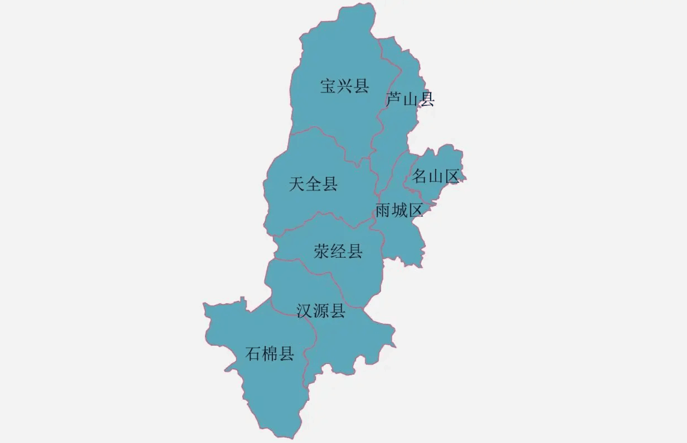

雅安概况 雅安市位于川藏、川滇公路交会处，距成都120公里，是四川盆地与青藏高原的结合过渡地带、汉文化与民族文化结合过渡地带、现代中心城市与原始自然生态区的结合过渡地带，是古南方丝绸之路的门户和必经之路，曾为西康省省会。也是中国优秀旅游城市、国家卫生城市和四川省历史文化名城，有“雨城”之称。北为阿坝藏族羌族自治州，西与南为甘孜藏族自治州和凉山彝族自治州，东面有成都、眉山、乐山3市，市域呈南北较长、东西较狭的不规则图形。概括来讲，雅安东邻成都、西连甘孜、南界凉山、北接阿坝，素有“川西咽喉”“西藏门户”“民族走廊”之称。 |
建城历史 雅安境内有人类活动的历史可以追溯到旧石器时代，“富林文化”是我国旧石器文化的典型代表。 公元前316年秦并巴蜀，置严道(治所在今荥经)，这是雅安最早的建置。 西汉置西部都尉府。 隋 仁寿四年(604年)置雅州。 唐代对边地民族招抚内附，在雅州、黎州两地设置近百个由少数民族首领管辖的羁縻州。 北 宋时期，雅州治所由多营坪迁到苍坪山麓。 元代雅州属陕西行省吐蕃等处宣慰使司。 清雍正七年(1729年)，雅州升为府治，雅州府是雅安历史上辖境最广阔的时期。 民国二十八年(1939年)建西康省，雅安属西康省第二行政督察区。 1950年，雅安解放，设雅安专区，雅安为西康省省会。 1955年撤销西康省，雅安专区并入四川省。 1968年，成立雅安地区革命委员会。 1981年，设雅安地区行政公署。 2000年12月，撤销雅安地区设立雅安市(地级市)。 |
| 县区规划 |
|  |
交通运输 雅安市位于川藏、川滇西公路交汇处，距成都140千米。国道108和318线穿城而过，雅泸高速公路、成雅高速公路与之相连，国道108、318线，G5京昆高速均经过雅安。成都新南门旅游集散中心、石羊场汽车站每日有客运班车到达雅安。经成雅高速公路到雅安仅一个半小时车程。雅安至景区每日有数十班客车往返，有出租车运行。 |
| 免责申明：本站发布的文章转载各大网络仅限用于学习和研究目的请勿应用于现实.文章、图片转载于网络如有侵权请及时联系，本站将在第一时间删除。 | |||
| 小项介绍 | 小项历程 | 联系方式 | 加入我们 |